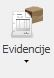

Evidencije
Evidencije(Knjige evidencija)

Put(1): Poslovanje → Dokumenti → Evidencije
Put(2): Poslovanje → Projekt → Dodaj(+) → Odjel → Dokument/Knjiga
TEHNIČKI URED
Knjiga projekata / Projektna dokumentacija
| R.B | Broj projekta | Broj tehničke dokumentacije | Naručitelj | Opis projekta | Inačica | Br. listova | Registrator | Datum | Potpis |
|---|---|---|---|---|---|---|---|---|---|
R.B
-> Generira se po trenutnom redoslijedu (automatski)
Broj projekta
-> Unosi se broj projekta (ručno)
Broj tehničke dokumentacije
-> Sastoji se od: 0279-1/19 - 2091 – TD – 20
– Broja projekta (povlači se iz polja „Broj projekta“)
– R.B (generira se automatski i povlači iz polja „R.B“)
– TD (tehnička dokumentacija\tehnical documentation , uvijek je ista oznaka i oznaka TD mora biti fiksna)
– 20 (tekući broj aktualne godine)
Naručitelj -> Dodati padajući izbornik s partnerima (automatski iz padajućeg izbornika)
Opis Projekta -> Upisuje se ime projekta + dodatni tekst (ručno)
Inačica -> Upisuje se zadnja verzija zapisnika/dokumentacije, npr.1,2,3… (ručno)
Br. Listova -> Upisuje se ukupan broj listova navedenog zapisnika/dokumentacije (ručno)
Registrator -> Unosi se broj registratora u kojega se fizički pohranjuje zapisnik/dokumentacija (ručno)
Datum -> Datum unosa zapisnika u sustav (automatski taj dan)
Potpis -> Defaultno ime korisnika koji je unio zapisnik/dokumentaciju (automatski)
ODJEL ISPITIVANJA
Knjiga zapisnika o ispitivanju
| R.B | Broj projekta | Broj zapisnika | Naručitelj | Opis predmeta | Registrator | Datum | Potpis |
|---|---|---|---|---|---|---|---|
R.B -> Generira se po trenutnom redoslijedu (automatski)
Broj projekta
-> Unosi se broj projekta (ručno)
Broj zapisnika
-> Sastoji se od: 5624 – 0143-1/20 – QC - 21
– R.B (generira se automatski i povlači iz polja „R.B“)
– Broja projekta/posla (povlači se iz polja „Broj projekta“)
– QC (kontrola kvalitete\ quality control, uvijek je ista oznaka i oznaka QC mora biti fiksna)(automatski)
– 21 (tekući broj aktualne godine)(automatski)
Naručitelj
-> Dodati padajući izbornik s partnerima (automatski iz padajućeg izbornika)
Opis predmeta
-> Upisuje se vrsta zapisnika izvedenog ispitivanja (ručno)
Registrator
-> Unosi se broj registratora u kojega se fizički pohranjuje zapisnik/dokumentacija (ručno)
Datum
-> Datum unosa zapisnika u sustav (automatski taj dan)
Potpis
-> Defaultno ime korisnika koji je unio zapisnik/dokumentaciju (automatski)
Knjiga proizvoda
| R.B | Broj Projekta | Serijski broj | Naručitelj | Opis proizvoda | Datum | Potpis |
|---|---|---|---|---|---|---|
R.B
-> Generira se po trenutnom redoslijedu (automatski)
Broj projekta
-> Unosi se broj projekta (odabir iz padajućeg izbornika)
Serijski broj
-> od 1360 / 2020
– R.B (generira se automatski i povlači iz polja „R.B“)
– 20 (tekući broj aktualne godine)(automatski)
Naručitelj
-> Dodati padajući izbornik s partnerima (automatski iz padajućeg izbornika)
Opis proizvoda
-> Upisuje se ime proizvoda + dodatni tekst (ručno)
Datum
-> Datum unosa zapisnika u sustav (odabir datuma iz kalendara)
Potpis
-> Defaultno ime korisnika koji je unio zapisnik/dokumentaciju (automatski)
Knjiga izjava o sukladnosti
| R.B | Broj Projekta | Broj izjave | Naručitelj | Opis proizvoda | Serijski broj | Datum | Potpis |
|---|---|---|---|---|---|---|---|
R.B
-> Generira se po trenutnom redoslijedu (automatski)
Broj projekta
-> Unosi se broj projekta (ručno)
Broj izjave
->Sastoji se od 1360 – 8052-1/20 – DC – 20
– R.B (generira se automatski i povlači iz polja „R.B“)
– Broja projekta/posla (povlači se iz polja „Broj projekta“)(automatski)
– DC (izjava o sukladnosti \ declaration of conformity, uvijek je ista oznaka i oznaka DC mora biti fiksna)(automatski)
– 20 (tekući broj aktualne godine)(automatski)
Naručitelj
-> Dodati padajući izbornik s partnerima (automatski iz padajućeg izbornika)
Opis proizvoda
-> Upisuje se ime proizvoda + dodatni tekst (ručno)
Serijski broj
-> Sastoji se od: 1841 / 2020
– Broj koji se nalazi u knjizi proizvoda i generira se po redoslijedu (ručno/automatski)
– 2020 (tekući broj aktualne godine) (automatski)
Datum
-> Datum unosa zapisnika u sustav (automatski taj dan)
Potpis
-> Defaultno ime korisnika koji je unio zapisnik/dokumentaciju (automatski)